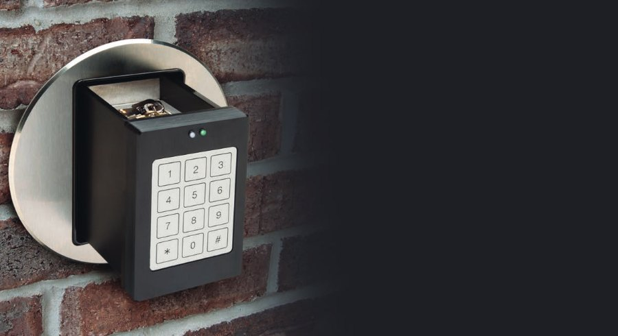
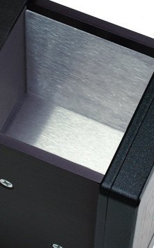
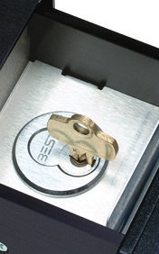
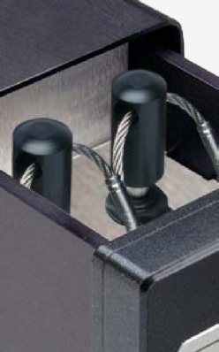
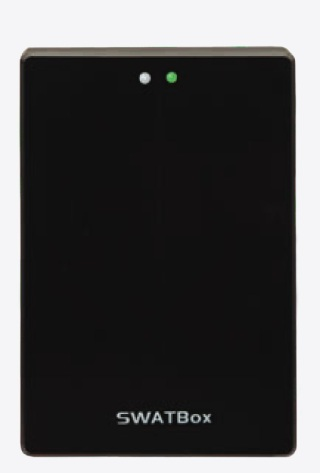
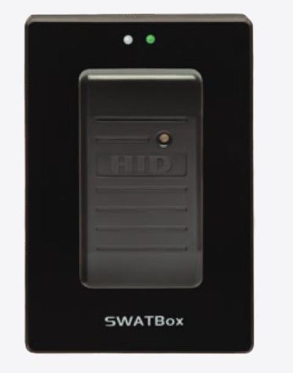

Productgegevens van de fabrikant · Key Systems, Inc.
SWATBox™
Ingebouwde opslag in de wand, uit het zicht


De SWATBox® wordt ingebouwd, waardoor fysieke bezittingen in de wand van uw gebouw en uit het publieke zicht verdwijnen. Gebruik een pincode, een identificatiemiddel of een willekeurig apparaat met internetverbinding (bijvoorbeeld een laptop of smartphone) om ter plaatse toegang te krijgen. De naar wens in te richten binnenruimte kan passen en sleutels bevatten, of eenvoudig dienen als een afgesloten lade. Met ons model op zonne-energie beveiligt en bewaakt u bezittingen op afgelegen of onbemande locaties.
In de kast

Ruimte voor waardevolle zaken
De binnenruimte is naar wens in te richten: voor passen en sleutels, of als afgesloten lade.

Sleutels
Directe opsluiting van belangrijke sleutels of hoofdsleutels, geschikt voor Tamper-Proof Key Rings®.

SmartFobs
Sleutels aan een SmartFob worden per positie vastgezet en herkend.
SWATBox™ · Uitvoeringen
Direct Control SWATBox™
De SWATBox is ook leverbaar in "Direct Control"-uitvoeringen. Dat zijn units waaruit de ingebouwde systemen zijn weggelaten die onze standaardapparaten aandrijven. Deze optie kan aantrekkelijk zijn voor wie directe controle wil over elke positie en elke deur van een apparaat, zonder tussenliggende computerhardware en/of software. De Direct Control SAM is gereed voor toegangscontrole en heeft duidelijk gemarkeerde doorverbindprints met schroefklemmen, voor een eenvoudige aansluiting op een bestaand besturingssysteem. Daarnaast kan de Direct Control SAM vrijwel alle opties* bevatten die in de standaard SAM-lijn te vinden zijn, zoals verschillende slottypen, directe opsluiting van belangrijke sleutels of hoofdsleutels, geschiktheid voor Tamper-Proof Key Rings® en meer.
Deze Direct Control SWATBox zit in dezelfde zeer sterke behuizing, maar werkt uitsluitend op een extern signaal van uw bestaande toegangscontrolesysteem. U levert zelf een 12-voltpuls om de SWATBox op commando te openen.
SWATBox met identificatiemiddel
Koppel uw bestaande identificatiemiddel aan onze SWATBox. De huidige personeelspassen van uw medewerkers zijn het enige dat nodig is voor toegang in één handeling.

Direct Control
Zonder eigen elektronica: opent op een 12-voltpuls uit uw toegangscontrolesysteem.

Met identificatiemiddel
Uw bestaande pas geeft toegang in één handeling.
* Niet alle opties uit de standaardlijn zijn in elke Direct Control-uitvoering leverbaar; wij bevestigen dit per aanvraag. Onder voorbehoud van wijzigingen.